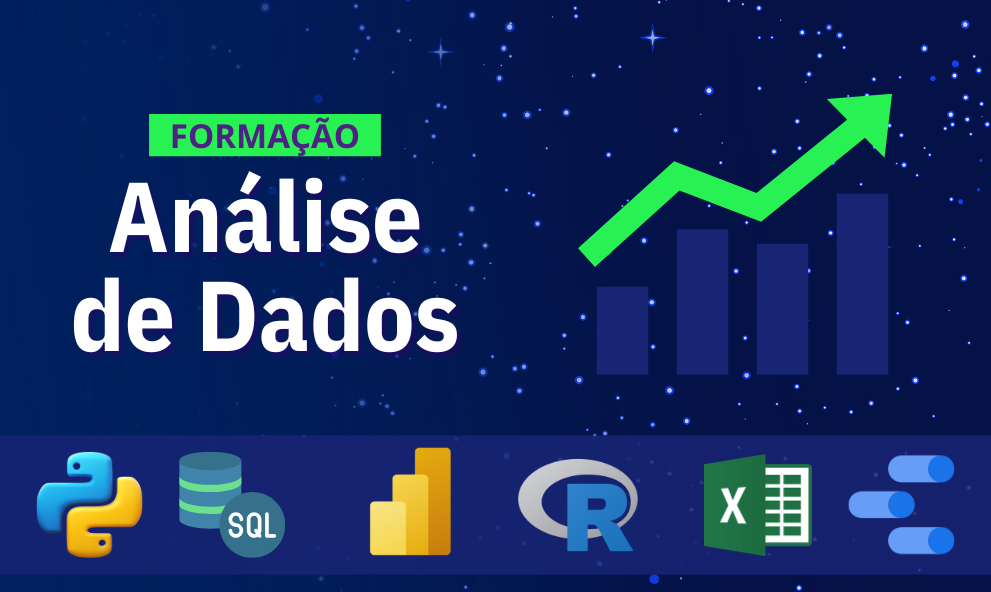

Áreas da Tecnologia da Informação
Este dashboard tem como objetivo apresentar, de forma simples e organizada, algumas das principais áreas da
Tecnologia da Informação. Com a evolução da tecnologia, a TI se tornou essencial em diversos setores,
oferecendo várias oportunidades profissionais.

Segurança
Proteção de dados e sistemas contra acessos não autorizados.
Ver mais
BI
Análise estratégica de informações.
Ver mais

Dados
Interpretação e organização de dados.
Ver mais

Projetos
Gestão de equipes e prazos.
Ver mais

Programação
Desenvolvimento de sistemas.
Ver mais
Qualidade
Testes e garantia de software.
Ver mais